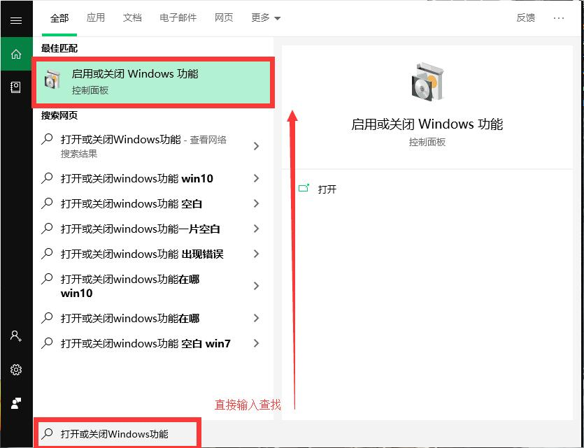
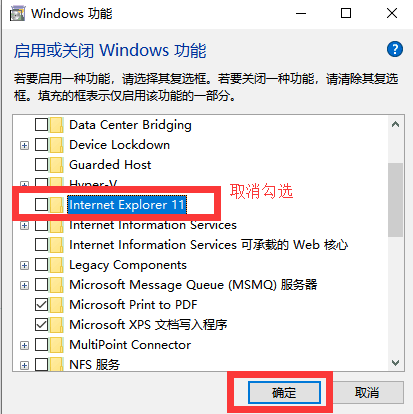
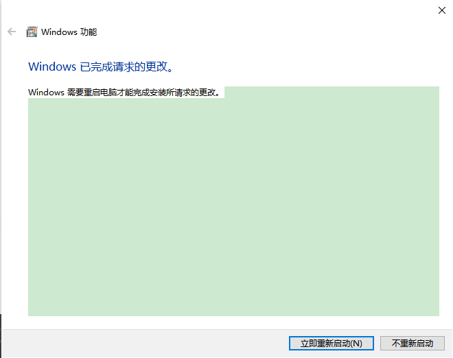

process: 0
通过打开或关闭Windows功能卸载 IE
打开或关闭Windows功能
按下 Win 键(带有 Windows 图标的按键)，直接输入启动或关闭Windows功能
启动或关闭Windows功能
找到 IE，取消勾选
重启电脑生效
同样，如果你不需要 Windows Media Player，只需要找到相应选项取消勾选即可(媒体功能 –> Windows Media Player)。